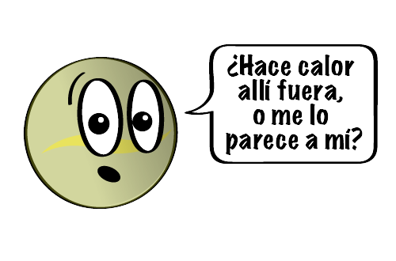
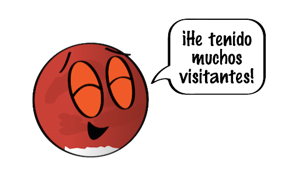

¿Qué es el sistema solar?
El sistema solar es un sistema planetario constituido por una estrella que ejerce atracción gravitacional sobre los cuerpos celestes que giran a su alrededor.

UN POCO SOBRE TODOS LOS PLANETAS

Mercurio: Mercurio es el planeta más pequeño de nuestro sistema solar. Simplemente, es un poco más grande que la Luna de la Tierra. Es el planeta más cercano al Sol. Tiene una atmósfera delgada y no tiene ninguna luna. A Mercurio le gusta simplificar las cosas. Este planeta pequeño da vueltas lentamente comparado con la Tierra, por lo tanto, un día dura un largo tiempo. A Mercurio le lleva 59 días de la Tierra hacer una rotación completa. Un año en Mercurio pasa rápido. Debido a que es el planeta más cercano al Sol, no le lleva mucho tiempo cubrir toda la circunferencia. Completa una vuelta alrededor del Sol en solo 88 días de la Tierra. ¡Si vivieras en Mercurio, tendrías una fiesta de cumpleaños cada tres meses!

Venus: Aunque Venus no es el planeta más cercano al Sol, es el más caliente. Tiene una atmósfera densa, llena de dióxido de carbono, que provoca el efecto invernadero, y de nubes compuestas de ácido sulfúrico. Los gases atrapan el calor y mantienen a Venus bien calentito. De hecho, hace tanto calor en Venus que metales como el plomo serían charcos de metal fundido. Tarda alrededor de 243 días terrestres en girar solo una vez. Debido a que está tan cerca del Sol, un año pasa muy rápido. Venus tarda 225 días terrestres en dar toda la vuelta alrededor del Sol. Esto significa que, en Venus, un día es un poco más largo que un año.
Tierra: Nuestro hogar, el planeta Tierra, es un planeta terrestre y rocoso. Tiene una superficie sólida y activa, con montañas, valles, cañones, llanuras y mucho más. La Tierra es especial porque es un planeta océano, ya que el agua cubre el 70% de su superficie. Nuestra atmósfera está compuesta, en gran parte, por nitrógeno. También tiene mucho oxígeno, que nos permite respirar. Actualmente, hay muchos satélites en órbita alrededor de la Tierra, tomando fotos y realizando mediciones. Esto nos permite saber más cosas sobre el clima, los océanos, la tierra, el cambio climático y muchos otros temas importantes. La Tierra tiene muchos satélites que la observan y la estudian. Aún nos falta mucho por aprender sobre nuestro planeta.

Marte: Marte es un planeta desértico y frío. Es la mitad del tamaño de la Tierra, y también recibe el nombre de "planeta rojo". Es rojo por el hierro oxidado que tiene en el suelo. Como la Tierra, Marte tiene estaciones, casquetes polares, volcanes, cañones y clima. Tiene una atmósfera poco densa hecha de dióxido de carbono, nitrógeno y argón. Hay signos de antiguas inundaciones en Marte, pero ahora el agua existe principalmente en su polvo helado y sus nubes delgadas. Los científicos quieren saber si Marte podría haber tenido seres vivos en el pasado. También quieren saber si Marte podría albergar vida ahora o en el futuro.
Júpiter: Júpiter es el planeta más grande de nuestro sistema solar. Es parecido a una estrella, pero nunca llegó a ser lo suficientemente masiva como para empezar a arder. Está cubierto de rayas de nubes arremolinadas. Tiene fuertes tormentas como la Gran Mancha Roja, que hace cientos de años que dura. Júpiter es un gigante hecho de gas, y no tiene una superficie sólida, pero puede tener un núcleo interno sólido de aproximadamente el tamaño de la Tierra. Júpiter también tiene anillos, pero son demasiado tenues para verlos muy bien. Un día dura solo 10 horas y un año equivale a 11,8 años en la Tierra.